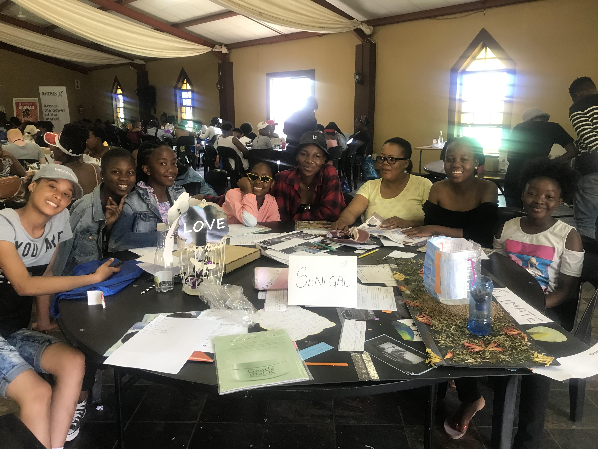
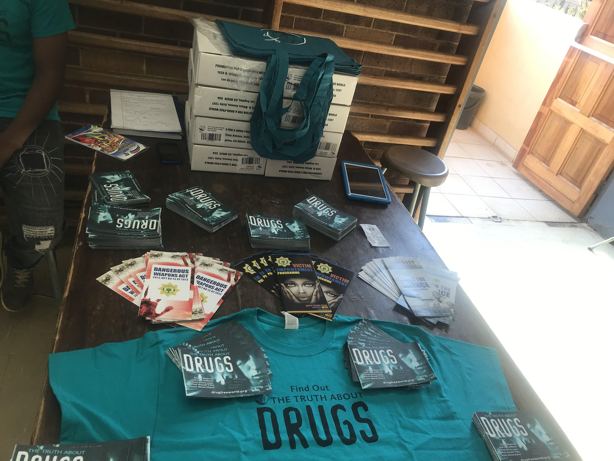
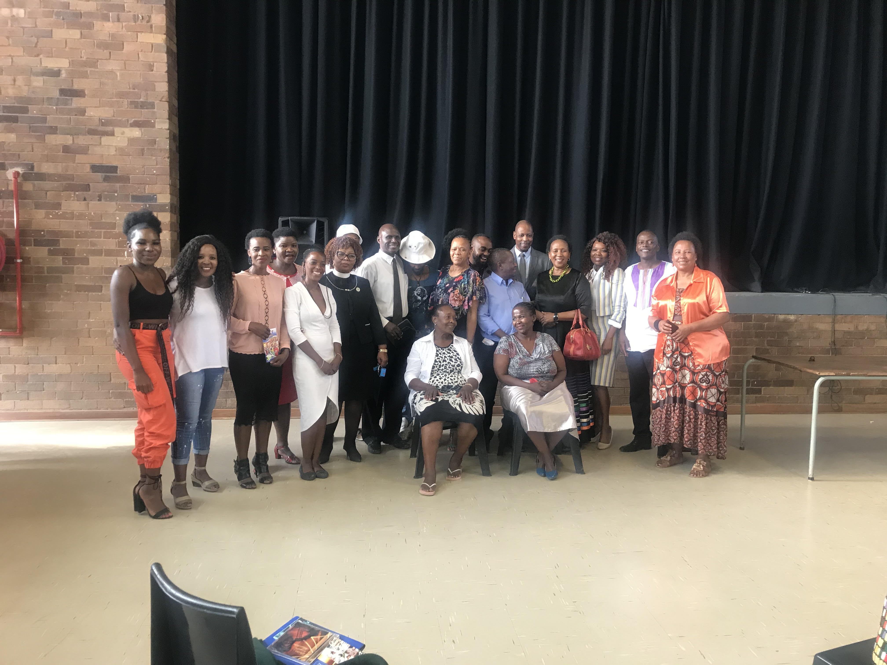

Bag a Toiletry Drive
In the grand adventure of life, I chose the path less traveled:
volunteering. Since I was 18, I've been on a mission to make the world a
better place, driven by a special passion for helping adolescent girls,
young women, and the often-overlooked homeless women.
Why this focus? Well, while the world tends to spotlight the plight of
homeless men, the unique struggles faced by homeless women, like the lack
of basic sanitary needs, often go unnoticed. Picture this: women using
leaves or scraps of cloth during their period, and not having clean water
to freshen up. It’s a situation that definitely needed some heroism.
So, in 2019, I launched the "Bag a Toiletry" drive. Our goal? To make a
difference with dignity. We started small, raising 50 bags of toiletries
(25 for men and 25 for women) to distribute in central Johannesburg. But
as it turns out, there was a larger need than we’d anticipated. Since
then, our efforts have grown exponentially. We've managed to distribute
300 bags of toiletries along with 300 food parcels at each drive, proving
that even small acts of kindness can snowball into something impactful.
So, if you’re ever wondering what drives a person to volunteer, let me
tell you: it’s the belief that a bit of effort, a dash of compassion, and
a whole lot of enthusiasm can make a world of difference—even if it means
tackling the thorny issues with a smile and a can-do attitude.
Empowering the Next Generation: My Journey as a "Girls’ Girl"
In a world where the challenges of being a migrant girl are all too real,
I’ve embraced my role as a staunch advocate for adolescent girls and young
women. Inspired by my mother—an educator, counsellor, public health
specialist, and former Doctors Without Borders hero—I’ve set out to create
a sanctuary where young women can voice their struggles and find support.
My mother’s ability to spread hope and joy left an indelible mark on me.
Watching her transform lives with compassion and expertise, I felt
compelled to channel that spirit into empowering young women who face
their own set of hurdles. From the importance of education and sexual
reproductive health to navigating the complexities of HIV/AIDS and
employment, our mission is clear: to equip adolescent girls and young
women with the knowledge and confidence they need to thrive.
We’re not just talking about change; we’re making it happen. Through
workshops, mentorship programs, and community outreach, we’re building a
brighter future one empowered girl at a time. After all, if there’s one
thing I’ve learned from my journey, it’s that every girl deserves a safe
space to grow, learn, and dream big.